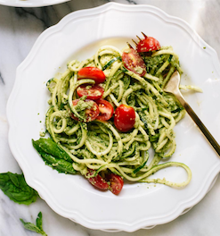

Meal Plan Example
These recipes are alternatives to the traditional recipes, which use healthier ingredients.
The exception is Thursday, which is the sacred take out day...
| Day |
Meal |
Calories |
| Monday |
Pasta |
320 |
| Tuesday |
Pizza |
550 |
| Wednesday |
Salad |
270 |
| Thursday |
Take Out |
|
| Friday |
Stir Fry |
350 |
Example Recipe
Pasta
- Zuccini or Squash
- Arugula
- Basil
- Garlic clove
- Olive oil
- Cherry Tomatoes
- Combine garlic, basil and olive oil in a food processor. Blend until pureed and smooth.
- Spiralize the zuccini or squash into noodle like form, and toss with the pesto until coated.
- Place pesto covered zoodles on plate and top with diced cherry tomatoes.
